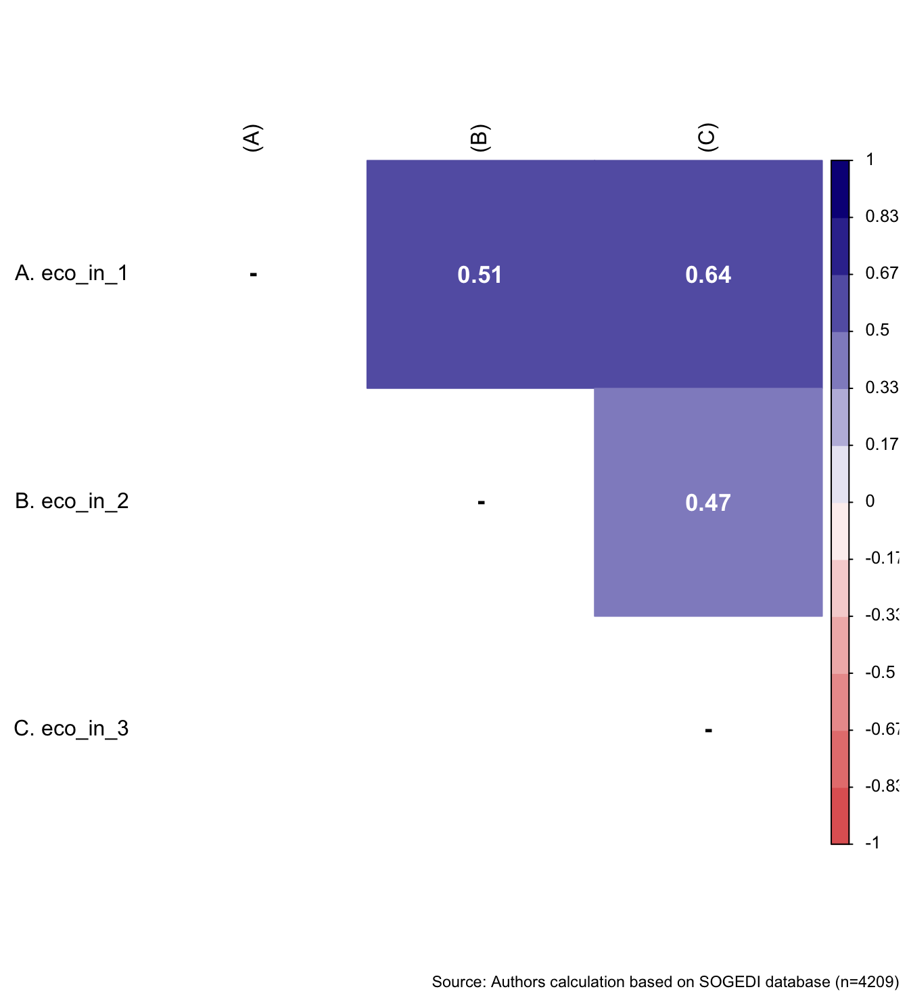
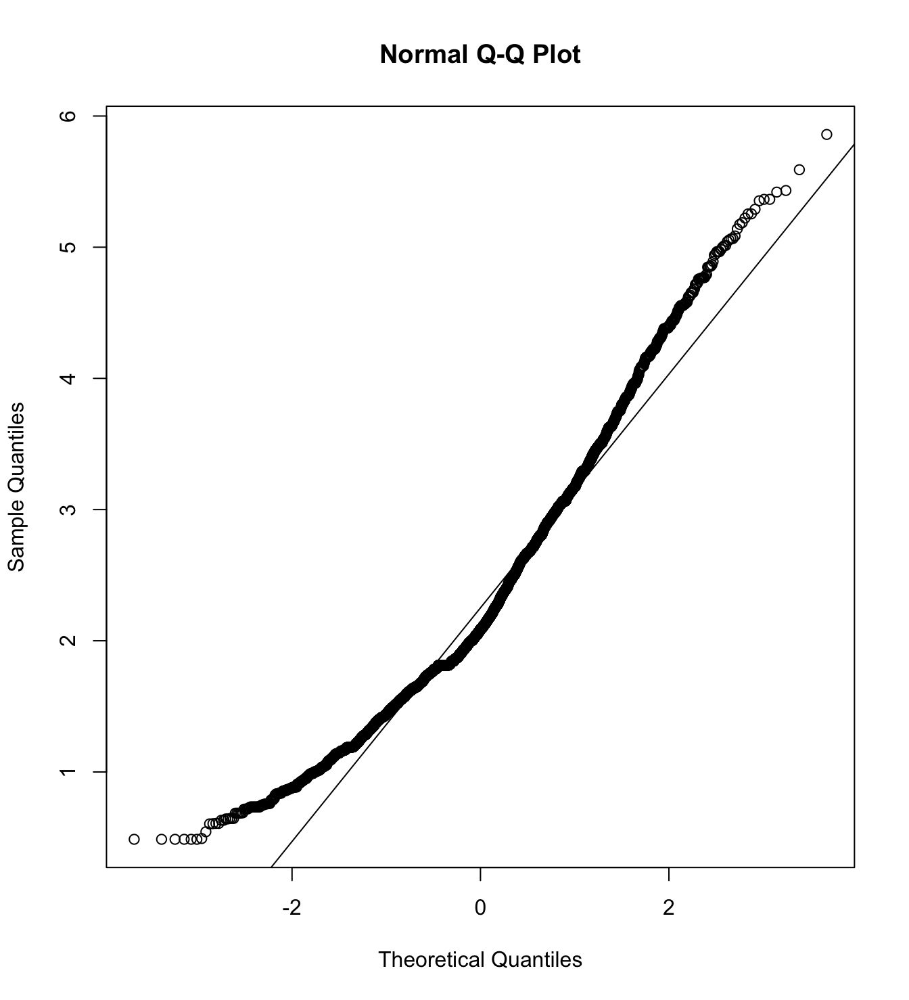
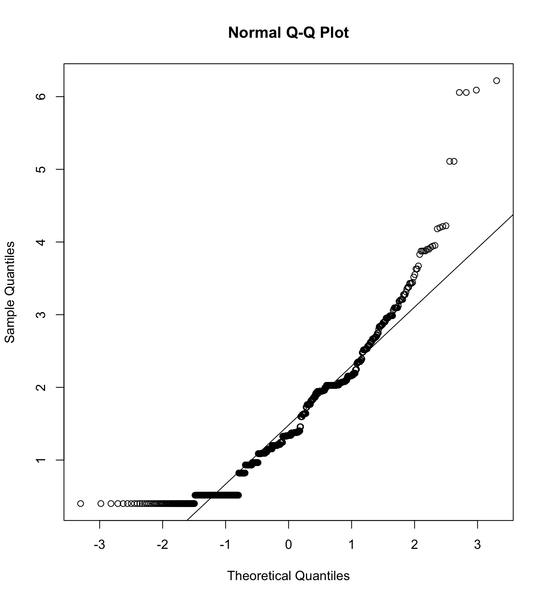
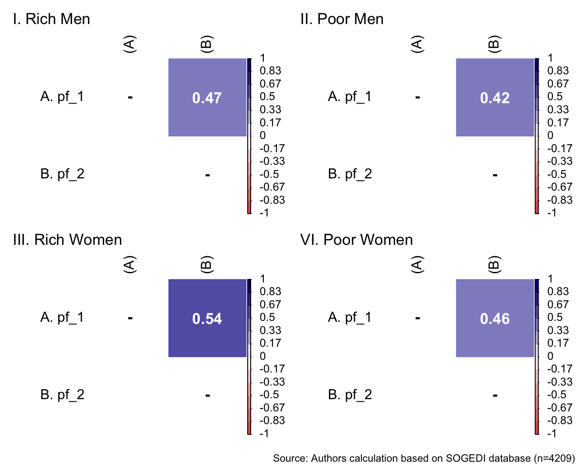

1 Presentation
This is the calculation and analysis of variables code of the data for the project Socioeconomic and Gender Disparities: A Multi-Country Study. The data used is db_proc.RData
2 Libraries
First, we load the necessary libraries. In this case, we use pacman::p_load to load and call libraries in one move.
3 Data
We load the database from the local path. Modify this later.
load(file = here("output/data/db_proc.RData"))
glimpse(db_proc)Rows: 4,209
Columns: 212
$ ID <dbl> 1, 2, 3, 4, 5, 6, 7, 8, 9, 10, 11, 12, 13, 1…
$ StartDate <dttm> 2024-04-28 11:11:20, 2024-04-28 11:12:34, 2…
$ EndDate <dttm> 2024-04-28 11:30:12, 2024-04-28 11:31:15, 2…
$ IPAddress <chr> "90.167.243.1", "83.58.124.179", "79.152.186…
$ Duration__in_seconds <dbl> 1132, 1120, 1192, 1410, 1328, 645, 933, 886,…
$ RecordedDate <dttm> 2024-04-28 11:30:12, 2024-04-28 11:31:16, 2…
$ ResponseId <chr> "R_1eqka09S3bZXYTp", "R_42oDc55cfSucfrX", "R…
$ LocationLatitude <chr> "41.6362", "41.3891", "41.4287", "41.5453", …
$ LocationLongitude <chr> "-4.7435", "2.1606", "2.2164", "2.4414", "-5…
$ eco_in_1 <dbl+lbl> 6, 6, 7, 6, 6, 4, 4, 3, 6, 3, 7, 7, 5, 5…
$ eco_in_2 <dbl+lbl> 6, 6, 7, 6, 6, 4, 5, 4, 3, 4, 1, 6, 5, 6…
$ eco_in_3 <dbl+lbl> 7, 6, 7, 6, 6, 4, 2, 3, 5, 3, 5, 4, 6, 6…
$ jus_ine <dbl+lbl> 1, 2, 1, 1, 2, 5, 1, 1, 2, 1, 2, 5, 3, 4…
$ co_eco <dbl+lbl> 7, 7, 6, 4, 5, 3, 6, 6, 3, 2, 1, 4, 5, 5…
$ pp_pw_1 <dbl+lbl> 7, 4, 6, 2, 5, 5, 3, 3, 2, 5, 7, 5, 5, 5…
$ pp_pw_2 <dbl+lbl> 7, 5, 6, 3, 6, 5, 5, 7, 2, 5, 2, 5, 5, 5…
$ pp_pw_3 <dbl+lbl> 7, 6, 7, 2, 5, 3, 3, 5, 2, 4, 2, 4, 5, 5…
$ pp_pw_4 <dbl+lbl> 7, 4, 4, 1, 5, 5, 3, 5, 2, 5, 4, 3, 5, 5…
$ cc_pw_1 <dbl+lbl> 5, 4, 6, 3, 6, 4, 5, 6, 5, 4, 4, 6, 6, 4…
$ cc_pw_2 <dbl+lbl> 4, 2, 4, 2, 5, 4, 4, 4, 2, 4, 2, 4, 4, 4…
$ cc_pw_3 <dbl+lbl> 4, 3, 6, 4, 6, 4, 4, 4, 2, 5, 7, 5, 6, 4…
$ cc_pw_4 <dbl+lbl> 3, 5, 5, 3, 6, 4, 5, 5, 4, 4, 7, 6, 6, 4…
$ hc_pw_1 <dbl+lbl> 1, 1, 1, 1, 1, 4, 2, 2, 1, 3, 1, 2, 4, 4…
$ hc_pw_2 <dbl+lbl> 2, 1, 2, 3, 3, 4, 2, 3, 1, 6, 1, 2, 5, 4…
$ hc_pw_3 <dbl+lbl> 1, 1, 4, 2, 2, 4, 1, 2, 1, 3, 1, 2, 2, 4…
$ hc_pw_4 <dbl+lbl> 2, 2, 2, 1, 2, 3, 4, 2, 1, 4, 1, 2, 5, 4…
$ pp_pm_1 <dbl+lbl> 6, 5, 6, 4, 5, 5, 3, 6, 2, 5, 7, 5, 6, 5…
$ pp_pm_2 <dbl+lbl> 7, 5, 7, 2, 6, 3, 2, 6, 2, 5, 5, 5, 4, 5…
$ pp_pm_3 <dbl+lbl> 7, 6, 6, 3, 5, 3, 3, 6, 2, 5, 7, 3, 5, 5…
$ pp_pm_4 <dbl+lbl> 7, 4, 6, 3, 5, 3, 3, 5, 2, 4, 7, 4, 6, 5…
$ cc_pm_1 <dbl+lbl> 7, 4, 4, 3, 5, 4, 5, 3, 5, 3, 2, 5, 5, 4…
$ cc_pm_2 <dbl+lbl> 4, 2, 1, 1, 4, 4, 3, 4, 2, 2, 2, 4, 4, 4…
$ cc_pm_3 <dbl+lbl> 4, 3, 2, 3, 4, 4, 4, 4, 2, 3, 1, 4, 6, 4…
$ cc_pm_4 <dbl+lbl> 3, 5, 5, 2, 4, 5, 4, 4, 2, 3, 2, 6, 3, 4…
$ hc_pm_1 <dbl+lbl> 3, 1, 4, 3, 3, 3, 2, 4, 4, 4, 7, 3, 5, 4…
$ hc_pm_2 <dbl+lbl> 3, 1, 5, 3, 3, 3, 2, 3, 2, 4, 7, 3, 5, 4…
$ hc_pm_3 <dbl+lbl> 2, 1, 3, 1, 2, 4, 2, 3, 2, 5, 7, 3, 6, 4…
$ hc_pm_4 <dbl+lbl> 3, 2, 4, 2, 5, 4, 2, 4, 1, 5, 7, 3, 5, 4…
$ gen_in_1 <dbl+lbl> 6, 7, 6, 7, 7, 3, 7, 7, 6, 5, 4, 6, 7, 4…
$ gen_in_2 <dbl+lbl> 6, 7, 6, 5, 7, 3, 5, 6, 1, 6, 7, 7, 7, 5…
$ gen_in_3 <dbl+lbl> 5, 7, 5, 7, 4, 3, 4, 7, 6, 6, 7, 5, 6, 4…
$ gen_in_4 <dbl+lbl> 3, 6, 5, 6, 6, 3, 5, 5, 5, 6, 7, 5, 3, 5…
$ gen_in_5 <dbl+lbl> 4, 6, 3, 5, 7, 3, 7, 4, 6, 5, 6, 5, 3, 4…
$ gen_in_6 <dbl+lbl> 6, 7, 5, 6, 4, 2, 5, 7, 6, 6, 7, 5, 7, 4…
$ ps_m_1 <dbl+lbl> 7, 2, 4, 1, 3, 3, 3, 4, 1, 4, 1, 7, 6, 4…
$ ps_m_2 <dbl+lbl> 6, 1, 2, 5, 1, 4, 1, 4, 1, 1, 1, 5, 4, 4…
$ ps_m_3 <dbl+lbl> 6, 2, 4, 3, 4, 2, 4, 4, 1, 4, 7, 3, 6, 4…
$ hs_m_1 <dbl+lbl> 1, 1, 2, 1, 2, 3, 2, 2, 1, 3, 1, 2, 4, 4…
$ hs_m_2 <dbl+lbl> 1, 1, 5, 1, 3, 3, 1, 2, 1, 2, 1, 2, 5, 4…
$ hs_m_3 <dbl+lbl> 1, 2, 1, 1, 2, 4, 1, 2, 1, 3, 1, 3, 5, 4…
$ shif_1 <dbl+lbl> 1, 1, 2, 2, 2, 6, 1, 1, 1, 2, 1, 5, 5, 4…
$ shif_2 <dbl+lbl> 1, 1, 2, 1, 2, 5, 1, 1, 1, 2, 1, 4, 2, 4…
$ shif_3 <dbl+lbl> 1, 1, 1, 4, 2, 3, 1, 1, 1, 2, 3, 5, 3, 4…
$ femi <dbl+lbl> 7, 7, 3, 5, 5, 1, 7, 5, 6, 2, 4, 2, 1, 4…
$ co_gen <dbl+lbl> 7, 7, 3, 4, 5, 3, 6, 5, 2, 2, 1, 4, 4, 4…
$ jus_gen <dbl+lbl> 1, 2, 1, 2, 3, 3, 3, 1, 1, 1, 1, 5, 3, 4…
$ gen_compe <dbl+lbl> 4, 6, 5, 5, 4, 4, 1, 4, 4, 4, 1, 5, 5, 4…
$ ge_ra_wo <dbl> 70, 70, 60, 60, 40, 20, 50, 20, 27, 60, 85, …
$ ge_ra_me <dbl> 30, 30, 40, 40, 60, 80, 50, 80, 73, 40, 15, …
$ quan_pw <dbl+lbl> 1, 4, 5, 3, 5, 3, 3, 2, 1, 2, 1, 3, 2, 2…
$ quan_pm <dbl+lbl> 1, 4, 5, 3, 5, 4, 3, 3, 1, 2, 1, 3, 2, 2…
$ quan_rw <dbl+lbl> 1, 5, 5, 4, 7, 3, 2, 2, 7, 1, 5, 3, 4, 2…
$ quan_rm <dbl+lbl> 1, 5, 5, 4, 7, 4, 2, 2, 7, 1, 5, 2, 4, 2…
$ fri_pw <dbl+lbl> 1, 1, 2, 3, 3, 4, 2, 1, 1, 3, 1, 2, 1, 1…
$ fri_pm <dbl+lbl> 1, 1, 1, 2, 3, 4, 2, 1, 1, 3, 1, 1, 1, 1…
$ fri_rw <dbl+lbl> 2, 4, 6, 4, 6, 4, 1, 1, 5, 1, 6, 4, 1, 1…
$ fri_rm <dbl+lbl> 2, 5, 6, 3, 6, 4, 1, 1, 5, 1, 7, 4, 1, 1…
$ qual_pw <dbl+lbl> 4, 5, 4, 4, 6, 4, 3, 3, 2, 4, 4, 3, 2, 4…
$ qual_pm <dbl+lbl> 4, 5, 3, 4, 4, 4, 3, 3, 2, 4, 4, 3, 2, 4…
$ qual_rw <dbl+lbl> 2, 5, 6, 3, 5, 4, 3, 4, 4, 4, 7, 4, 3, 4…
$ qual_rm <dbl+lbl> 2, 5, 5, 3, 5, 4, 3, 4, 4, 4, 7, 4, 3, 4…
$ mobi_up_1 <dbl+lbl> 4, 3, 3, 5, 2, 3, 1, 3, 1, 4, 5, 5, 6, 5…
$ mobi_up_2 <dbl+lbl> 4, 4, 5, 3, 3, 4, 1, 3, 1, 2, 4, 5, 5, 5…
$ mobi_up_3 <dbl+lbl> 5, 3, 1, 6, 2, 4, 1, 4, 1, 3, 3, 5, 5, 4…
$ mobi_down_1 <dbl+lbl> 5, 6, 6, 6, 5, 4, 5, 5, 6, 4, 5, 3, 2, 4…
$ mobi_down_2 <dbl+lbl> 5, 4, 5, 2, 4, 3, 4, 4, 5, 4, 1, 3, 2, 3…
$ mobi_down_3 <dbl+lbl> 4, 5, 3, 3, 5, 4, 3, 4, 6, 4, 1, 3, 2, 3…
$ condi_gender <dbl+lbl> 0, 0, 0, 1, 0, 1, 1, 0, 1, 1, 1, 0, 1, 0…
$ condi_class <dbl+lbl> 1, 1, 0, 0, 1, 1, 1, 0, 1, 0, 0, 0, 0, 1…
$ mor_1 <dbl+lbl> 1, 4, 3, 6, 3, 4, 2, 3, 3, 5, 5, 2, 5, 4…
$ mor_2 <dbl+lbl> 2, 3, 4, 5, 2, 5, 3, 4, 4, 4, 5, 3, 4, 4…
$ mor_3 <dbl+lbl> 2, 3, 3, 4, 3, 4, 2, 3, 4, 3, 6, 3, 2, 4…
$ inm_1 <dbl+lbl> 7, 5, 6, 3, 6, 4, 2, 3, 3, 4, 1, 7, 4, 4…
$ inm_2 <dbl+lbl> 6, 4, 4, 2, 3, 3, 2, 3, 5, 2, 1, 6, 3, 4…
$ inm_3 <dbl+lbl> 5, 5, 4, 1, 6, 5, 2, 4, 4, 4, 2, 5, 5, 4…
$ war_1 <dbl+lbl> 4, 4, 2, 4, 5, 4, 5, 4, 5, 5, 5, 3, 5, 4…
$ war_2 <dbl+lbl> 2, 3, 4, 5, 4, 3, 3, 4, 4, 4, 5, 3, 4, 4…
$ war_3 <dbl+lbl> 4, 4, 2, 6, 5, 3, 5, 5, 4, 5, 5, 3, 4, 4…
$ com_1 <dbl+lbl> 7, 6, 4, 5, 5, 5, 3, 4, 4, 3, 6, 5, 3, 5…
$ com_2 <dbl+lbl> 6, 6, 5, 5, 5, 5, 3, 5, 5, 4, 6, 5, 2, 5…
$ com_3 <dbl+lbl> 5, 5, 3, 5, 5, 6, 3, 4, 5, 5, 6, 4, 3, 5…
$ ph_1 <dbl+lbl> 4, 1, 2, 1, 6, 2, 1, 1, 5, 1, 1, 6, 3, 2…
$ ph_2 <dbl+lbl> 4, 1, 6, 1, 6, 2, 1, 1, 5, 4, 1, 5, 4, 2…
$ ah_1 <dbl+lbl> 2, 2, 1, 1, 5, 2, 2, 1, 1, 1, 1, 1, 2, 2…
$ ah_2 <dbl+lbl> 2, 1, 2, 1, 5, 2, 2, 1, 1, 1, 1, 1, 1, 2…
$ pf_1 <dbl+lbl> 4, 4, 5, 5, 3, 4, 2, 7, 3, 5, 7, 5, 5, 4…
$ pf_2 <dbl+lbl> 1, 5, 1, 4, 3, 5, 5, 2, 5, 2, 4, 3, 4, 4…
$ af_1 <dbl+lbl> 1, 4, 1, 5, 3, 3, 3, 7, 2, 2, 7, 2, 3, 4…
$ af_2 <dbl+lbl> 1, 3, 2, 7, 4, 4, 2, 7, 4, 5, 4, 4, 5, 4…
$ ad_1 <dbl+lbl> 1, 4, 2, 5, 3, 5, 1, 5, 2, 3, 2, 3, 4, 4…
$ ad_2 <dbl+lbl> 4, 4, 5, 6, 2, 5, 3, 7, 2, 6, 7, 4, 6, 4…
$ co_1 <dbl+lbl> 2, 1, 1, 1, 6, 2, 4, 1, 5, 1, 1, 1, 3, 2…
$ co_2 <dbl+lbl> 2, 2, 2, 1, 6, 2, 2, 1, 4, 1, 1, 3, 4, 2…
$ en_1 <dbl+lbl> 1, 1, 1, 2, 2, 2, 4, 1, 3, 1, 1, 1, 1, 2…
$ en_2 <dbl+lbl> 1, 1, 1, 1, 2, 2, 4, 1, 4, 1, 1, 1, 1, 2…
$ pi_1 <dbl+lbl> 1, 1, 6, 4, 5, 1, 2, 6, 4, 3, 6, 6, 6, 2…
$ pi_2 <dbl+lbl> 1, 1, 6, 3, 1, 2, 1, 7, 2, 4, 7, 5, 5, 2…
$ sk_1 <dbl+lbl> 7, 6, 6, 7, 6, 2, 7, 6, 4, 5, 7, 5, 3, 4…
$ sk_2 <dbl+lbl> 7, 7, 6, 5, 7, 2, 7, 7, 5, 6, 7, 3, 5, 4…
$ sk_3 <dbl+lbl> 7, 7, 7, 7, 7, 2, 7, 5, 4, 6, 7, 7, 5, 4…
$ ex_po_1 <dbl+lbl> NA, NA, 5, 7, NA, NA, NA, 7, NA, 7, …
$ ex_po_2 <dbl+lbl> NA, NA, 6, 5, NA, NA, NA, 6, NA, 7, …
$ in_po_1 <dbl+lbl> NA, NA, 4, 2, NA, NA, NA, 4, NA, 4, …
$ in_po_2 <dbl+lbl> NA, NA, 2, 1, NA, NA, NA, 5, NA, 5, …
$ ex_we_1 <dbl+lbl> 7, 7, NA, NA, 7, 4, 7, NA, 6, NA, …
$ ex_we_2 <dbl+lbl> 7, 7, NA, NA, 7, 4, 7, NA, 6, NA, …
$ in_we_1 <dbl+lbl> 7, 5, NA, NA, 3, 5, 3, NA, 2, NA, …
$ in_we_2 <dbl+lbl> 3, 5, NA, NA, 3, 5, 2, NA, 1, NA, …
$ carin_control_1 <dbl+lbl> NA, NA, 4, 7, NA, NA, NA, 2, NA, 4, …
$ carin_control_2 <dbl+lbl> NA, NA, 3, 1, NA, NA, NA, 2, NA, 4, …
$ carin_attitude_1 <dbl+lbl> NA, NA, 5, 1, NA, NA, NA, 4, NA, 2, …
$ carin_attitude_2 <dbl+lbl> NA, NA, 7, 1, NA, NA, NA, 2, NA, 3, …
$ carin_reciprocity_1 <dbl+lbl> NA, NA, 3, 4, NA, NA, NA, 3, NA, 3, …
$ carin_reciprocity_2 <dbl+lbl> NA, NA, 5, 1, NA, NA, NA, 2, NA, 4, …
$ carin_identity_1 <dbl+lbl> NA, NA, 3, 1, NA, NA, NA, 1, NA, 1, …
$ carin_identity_2 <dbl+lbl> NA, NA, 1, 2, NA, NA, NA, 5, NA, 1, …
$ carin_need_1 <dbl+lbl> NA, NA, 6, 1, NA, NA, NA, 1, NA, 5, …
$ carin_need_2 <dbl+lbl> NA, NA, 5, 1, NA, NA, NA, 1, NA, 5, …
$ greedy_1 <dbl+lbl> 7, 6, NA, NA, 7, 2, 3, NA, 7, NA, …
$ greedy_2 <dbl+lbl> 7, 6, NA, NA, 7, 3, 4, NA, 6, NA, …
$ greedy_3 <dbl+lbl> 7, 6, NA, NA, 7, 3, 4, NA, 5, NA, …
$ punish_1 <dbl+lbl> 7, 7, NA, NA, 7, 2, 6, NA, 7, NA, …
$ punish_2 <dbl+lbl> 7, 7, NA, NA, 7, 2, 7, NA, 7, NA, …
$ punish_3 <dbl+lbl> 7, 7, NA, NA, 7, 2, 7, NA, 7, NA, …
$ asc_pw <dbl> 50, 61, 69, 53, 80, 51, 50, 73, 51, 65, 51, …
$ asc_pm <dbl> 50, 61, 61, 54, 70, 47, 51, 39, 51, 65, 30, …
$ asc_rw <dbl> 50, 76, 40, 48, 80, 65, 51, 73, 51, 15, 80, …
$ asc_rm <dbl> 50, 75, 61, 51, 70, 64, 51, 58, 51, 15, 70, …
$ wel_abu_1 <dbl+lbl> 1, 1, 3, 1, 2, 2, 3, 4, 1, 4, 2, 3, 3, 5…
$ wel_abu_2 <dbl+lbl> 1, 1, 2, 1, 2, 2, 3, 2, 1, 2, 2, 4, 3, 5…
$ wel_pa_1 <dbl+lbl> 7, 2, 7, 1, 6, 2, 3, 6, 5, 7, 7, 5, 6, 5…
$ wel_pa_2 <dbl+lbl> 7, 2, 7, 1, 6, 2, 5, 6, 4, 6, 7, 7, 5, 5…
$ wel_ho_1 <dbl+lbl> 1, 1, 1, 1, 2, 2, 2, 3, 1, 5, 1, 1, 2, 5…
$ wel_ho_2 <dbl+lbl> 1, 1, 1, 1, 2, 2, 4, 4, 1, 6, 1, 4, 2, 5…
$ pro_pw <dbl+lbl> 4, 2, 3, 1, 2, 3, 3, 2, 1, 2, 1, 2, 5, 4…
$ pro_rw <dbl+lbl> 4, 2, 6, 1, 5, 4, 3, 4, 1, 6, 7, 5, 6, 4…
$ ris_pw <dbl+lbl> 6, 2, 6, 1, 6, 4, 3, 3, 4, 4, 7, 6, 6, 4…
$ ris_rw <dbl+lbl> 3, 1, 5, 1, 4, 4, 3, 3, 5, 5, 5, 4, 2, 4…
$ pre_pw <dbl+lbl> 6, 3, 6, 3, 6, 4, 4, 3, 5, 5, 7, 4, 6, 5…
$ pre_rw <dbl+lbl> 3, 1, 4, 3, 2, 4, 2, 3, 3, 2, 2, 5, 1, 2…
$ redi_1 <dbl+lbl> 7, 7, 7, 5, 7, 4, 7, 7, 6, 7, 6, 5, 6, 5…
$ redi_2 <dbl+lbl> 7, 7, 6, 1, 7, 3, 7, 7, 7, 7, 1, 6, 7, 6…
$ effec_pw_1 <dbl+lbl> 1, 1, 5, 1, 3, 3, 2, 2, 2, 3, 2, 4, 2, 4…
$ effec_pw_2 <dbl+lbl> 7, 6, 3, 5, 4, 3, 3, 5, 2, 3, 4, 3, 6, 4…
$ effec_pm_1 <dbl+lbl> 1, 1, 6, 1, 4, 4, 3, 3, 2, 5, 7, 5, 5, 4…
$ effec_pm_2 <dbl+lbl> 7, 6, 3, 4, 3, 4, 3, 4, 2, 4, 7, 5, 3, 4…
$ poli_progre_1 <dbl+lbl> 7, 7, 5, 6, 7, 2, 7, 6, 6, 6, 7, 6, 5, 6…
$ poli_progre_2 <dbl+lbl> 7, 7, 5, 6, 7, 3, 5, 7, 6, 6, 7, 6, 6, 6…
$ poli_restri_1 <dbl+lbl> 7, 4, 6, 1, 6, 3, 4, 4, 4, 6, 6, 3, 4, 5…
$ poli_restri_2 <dbl+lbl> 3, 6, 5, 1, 4, 3, 2, 6, 3, 4, 7, 5, 5, 5…
$ aut_pw_1 <dbl+lbl> 7, 6, 3, 5, 5, 4, 2, 2, 3, 4, 7, 3, 3, 4…
$ aut_pm_1 <dbl+lbl> 7, 6, 3, 5, 4, 4, 2, 3, 4, 4, 7, 2, 3, 4…
$ depe_pw_1 <dbl+lbl> 6, 2, 5, 1, 6, 4, 5, 4, 4, 4, 7, 5, 5, 5…
$ depe_pm_1 <dbl+lbl> 6, 3, 5, 1, 6, 4, 5, 4, 4, 4, 7, 5, 5, 5…
$ condi_viole <dbl+lbl> 0, 1, 0, 0, 1, 1, 1, 1, 0, 0, 0, 1, 1, 1…
$ hara_pw_1 <dbl+lbl> 7, 6, 3, 7, 5, 5, 5, 5, 5, 6, 4, 5, 4, 4…
$ hara_pw_2 <dbl+lbl> 7, 7, 7, 7, 7, 7, 7, 6, 7, 7, 7, 7, 5, 4…
$ hara_pw_3 <dbl+lbl> 7, 6, 2, 7, 6, 7, 7, 5, 6, 7, 7, 7, 6, 4…
$ abu_pw_1 <dbl+lbl> 7, 7, 3, 7, 5, 7, 7, 6, 6, 7, 7, 7, 7, 5…
$ abu_pw_2 <dbl+lbl> 7, 7, 4, 7, 6, 7, 7, 7, 7, 7, 7, 7, 7, 5…
$ abu_pw_3 <dbl+lbl> 7, 7, 6, 7, 7, 7, 7, 7, 7, 7, 7, 7, 7, 6…
$ viole_pw_1 <dbl+lbl> 7, 5, 7, 2, 3, 3, 3, 6, 4, 7, 6, 5, 2, 3…
$ viole_pw_2 <dbl+lbl> 7, 6, 7, 2, 5, 4, 4, 5, 4, 6, 6, 5, 3, 3…
$ viole_pw_3 <dbl+lbl> 7, 7, 6, 2, 7, 4, 4, 6, 6, 7, 6, 5, 5, 3…
$ viole_pw_4 <dbl+lbl> 7, 5, 6, 2, 5, 4, 4, 6, 4, 6, 6, 4, 2, 3…
$ viole_pw_5 <dbl+lbl> 7, 2, 6, 2, 2, 3, 4, 4, 7, 6, 4, 3, 3, 3…
$ viole_pw_6 <dbl+lbl> 7, 6, 5, 2, 6, 5, 4, 6, 6, 6, 7, 4, 4, 3…
$ barri_pw_1 <dbl+lbl> 6, 5, 7, 2, 2, 3, 6, 6, 6, 7, 7, 7, 5, 2…
$ barri_pw_2 <dbl+lbl> 6, 1, 7, 2, 1, 3, 5, 7, 6, 7, 7, 6, 3, 2…
$ barri_pw_3 <dbl+lbl> 6, 6, 6, 2, 4, 4, 3, 7, 6, 6, 7, 4, 5, 2…
$ barri_pw_4 <dbl+lbl> 6, 3, 6, 2, 3, 4, 6, 7, 6, 6, 7, 4, 2, 2…
$ barri_pw_5 <dbl+lbl> 6, 6, 5, 2, 6, 4, 6, 5, 4, 7, 7, 3, 3, 2…
$ perpe_1 <dbl+lbl> 1, 1, 1, 1, 1, 1, 1, 1, 1, 1, 1, 1, 1, 1…
$ perpe_2 <dbl+lbl> 1, 1, 1, 1, 1, 1, 1, 1, 1, 1, 1, 1, 1, 1…
$ perpe_3 <dbl+lbl> 1, 1, 1, 1, 1, 1, 1, 1, 1, 1, 1, 1, 1, 1…
$ perpe_4 <dbl+lbl> 1, 1, 1, 1, 1, 1, 1, 1, 1, 1, 1, 1, 1, 1…
$ perpe_5 <dbl+lbl> 1, 1, 1, 1, 2, 1, 1, 1, 1, 1, 1, 1, 1, 1…
$ age <dbl+lbl> 54, 58, 57, 30, 25, 22, 27, 29, 22, 41, …
$ sex <dbl+lbl> 2, 1, 2, 1, 2, 2, 1, 1, 1, 2, 1, 1, 2, 2…
$ sex_other <chr> "", "", "", "", "", "", "", "", "", "", "", …
$ edu <dbl+lbl> 5, 5, 5, 6, 5, 5, 5, 4, 5, 5, 6, 5, 6, 6…
$ ses <dbl+lbl> 6, 6, 6, 7, 7, 7, 6, 5, 5, 4, 6, 8, 6, 5…
$ hig_ide <dbl+lbl> 2, 1, 1, 4, 2, 4, 1, 2, 2, 1, 3, 4, 3, 3…
$ mid_ide <dbl+lbl> 5, 6, 6, 6, 6, 5, 4, 6, 4, 3, 7, 6, 6, 5…
$ low_ide <dbl+lbl> 3, 1, 2, 2, 1, 2, 3, 2, 3, 5, 1, 3, 2, 2…
$ po <dbl+lbl> 1, 2, 2, 3, 2, 5, 1, 2, 2, 1, 5, 6, 6, 3…
$ country_residence <dbl+lbl> 9, 9, 9, 9, 9, 9, 9, 9, 9, 9, 9, 9, 9, 9…
$ country_residence_other <chr> "", "", "", "", "", "", "", "", "", "", "", …
$ country_residence_recoded <dbl+lbl> 9, 9, 9, 9, 9, 9, 9, 9, 9, 9, 9, 9, 9, 9…
$ lang <dbl+lbl> 1, 1, 3, 3, 1, 1, 1, 1, 1, 1, 1, 1, 1, 1…
$ lang_other <chr> "", "", "Catalán", "Catalán", "", "", "", ""…
$ lang_recoded <dbl+lbl> 1, 1, 1, 1, 1, 1, 1, 1, 1, 1, 1, 1, 1, 1…
$ inc <dbl> 3200, 1300, 3000, 60000, 3500, 600, 1800, 70…
$ currency <dbl+lbl> 7, 7, 7, 7, 7, 7, 7, 7, 7, 7, 7, 7, 7, 7…
$ post_code <chr> "40197", "47001", "08020", "00001", "41005",…
$ municipality <chr> "Segovia", "Valladolid", "sant marti", "-", …
$ n_perso <dbl+lbl> 3, 1, 4, 2, 3, 3, 3, 2, 1, 3, 1, 3, 4, 1…
$ ori_sex <dbl+lbl> 1, 1, 1, 1, 1, 1, 1, 1, 3, 1, 1, 1, 1, 1…
$ ori_sex_other <chr> "", "", "", "", "", "", "", "", "", "", "", …
$ relation <dbl+lbl> 1, 2, 1, 1, 1, 2, 1, 1, 2, 1, 2, 1, 1, 1…
$ natio_recoded <dbl+lbl> 9, 9, 9, 9, 9, 9, 9, 9, 9, 9, 9, 9, 9, 9…
$ regional_area <dbl+lbl> 4, 4, 4, 4, 4, 4, 4, 4, 4, 4, 4, 4, 4, 4…We have 4,209 cases or rows and 212 variables or columns.
4 Functions
describe_kable <- function(data, vars) {
psych::describe(data[, vars]) %>%
kableExtra::kable(format = "markdown", digits = 3)
}
fit_correlations <- function(data, vars) {
M <- cor(data[, vars], method = "pearson", use = "complete.obs")
P <- psych::polychoric(data[, vars])
diag(M) <- NA
diag(P$rho) <- NA
rnames <- paste0(LETTERS[1:length(vars)], ". ", vars)
cnames <- paste0("(", LETTERS[1:length(vars)], ")")
rownames(M) <- rnames
colnames(M) <- cnames
rownames(P$rho) <- rnames
colnames(P$rho) <- cnames
list(pearson = M, polychoric = P$rho)
}
corr_plots <- function(cor_list, data, db_name = "SOGEDI") {
p1 <- wrap_elements(
~corrplot::corrplot(
cor_list$pearson,
method = "color",
type = "upper",
col = colorRampPalette(c("#E16462", "white", "#0D0887"))(12),
tl.pos = "lt",
tl.col = "black",
addrect = 2,
rect.col = "black",
addCoef.col = "white",
cl.cex = 0.8,
cl.align.text = 'l',
number.cex = 1.1,
na.label = "-",
bg = "white"
)
) + labs(title = 'I. Pearson correlations')
p2 <- wrap_elements(
~corrplot::corrplot(
cor_list$polychoric,
method = "color",
type = "upper",
col = colorRampPalette(c("#E16462", "white", "#0D0887"))(12),
tl.pos = "lt",
tl.col = "black",
addrect = 2,
rect.col = "black",
addCoef.col = "white",
cl.cex = 0.8,
cl.align.text = 'l',
number.cex = 1.1,
na.label = "-",
bg = "white"
)
) + labs(title = 'II. Polychoric correlations')
p1 / p2 +
plot_annotation(
caption = paste0(
"Source: Authors calculation based on ", db_name,
" database (n=", nrow(data), ")"
)
)
}
alphas <- function(data, vars, new_var) {
alpha_cronbach <- psych::alpha(data[, vars])
raw_alpha <- alpha_cronbach$total$raw_alpha
poly_matrix <- psych::polychoric(data[, vars])
alpha_ordinal <- psych::alpha(poly_matrix$rho)
ord_alpha <- alpha_ordinal$total$raw_alpha
data[[new_var]] <- rowMeans(data[, vars], na.rm = TRUE)
new_var_summary <- summary(data[[new_var]])
list(
raw_alpha = raw_alpha,
ord_alpha = ord_alpha,
new_var_summary = new_var_summary
)
}
cfa_tables <- function(model) {
sum_loadings <- standardizedSolution(model) %>%
filter(op == "=~") %>%
select(lhs, rhs, est.std) %>%
rename(
Factor = lhs,
Indicator = rhs,
Loading = est.std
)
loadings_table <- sum_loadings %>%
kableExtra::kable(
format = "markdown",
digits = 3,
booktabs = TRUE,
col.names = c("Factor", "Indicator", "Loading"),
caption = NULL
) %>%
kableExtra::kable_styling(
full_width = FALSE,
font_size = 10,
latex_options = "HOLD_position",
bootstrap_options = c("striped", "bordered")
)
sum_fit <- fitmeasures(model, output = "matrix")[c("chisq","pvalue","df","cfi","tli","rmsea","rmsea.ci.lower","rmsea.ci.upper"),]
sum_fit$nobs <- nobs(model)
sum_fit$est <- "DWLS"
sum_fit <- data.frame(sum_fit) %>%
mutate(
across(.cols = c(cfi, tli, rmsea, rmsea.ci.lower, rmsea.ci.upper),
.fns = ~ round(., 3))
) %>%
mutate(stars=gtools::stars.pval(pvalue),
chisq=paste0(round(chisq,3)," (",df,") ", stars),
rmsea.ci = paste0(rmsea, "(", rmsea.ci.lower, "-", rmsea.ci.upper, ")")) %>%
select(nobs, est, chisq, cfi, tli, rmsea.ci)
colnames_fit <- c("$N$","Estimator","$\\chi^2$","CFI","TLI","RMSEA (90%)")
fit_table <- sum_fit %>%
kableExtra::kable(
format = "markdown",
digits = 3,
booktabs = TRUE,
col.names = colnames_fit,
caption = NULL
) %>%
kableExtra::kable_styling(
full_width = TRUE,
font_size = 10,
latex_options = "HOLD_position",
bootstrap_options = c("striped", "bordered")
)
list(
loadings_table = loadings_table,
fit_table = fit_table
)
}
fit_correlations_pairwise <- function(data, vars) {
M <- cor(data[, vars], method = "pearson", use = "pairwise.complete.obs")
P <- psych::polychoric(data[, vars], global = FALSE)
diag(M) <- NA
diag(P$rho) <- NA
rnames <- paste0(LETTERS[1:length(vars)], ". ", vars)
cnames <- paste0("(", LETTERS[1:length(vars)], ")")
rownames(M) <- rnames
colnames(M) <- cnames
rownames(P$rho) <- rnames
colnames(P$rho) <- cnames
list(pearson = M, polychoric = P$rho)
}5 Processing
5.1 Block 1. Class inequality / Attitudes
5.1.1 Perception of economic inequality in daily live
describe_kable(db_proc, c("eco_in_1", "eco_in_2", "eco_in_3"))| vars | n | mean | sd | median | trimmed | mad | min | max | range | skew | kurtosis | se | |
|---|---|---|---|---|---|---|---|---|---|---|---|---|---|
| eco_in_1 | 1 | 4209 | 5.789 | 1.410 | 6 | 6.007 | 1.483 | 1 | 7 | 6 | -1.167 | 0.961 | 0.022 |
| eco_in_2 | 2 | 4209 | 5.794 | 1.468 | 6 | 6.040 | 1.483 | 1 | 7 | 6 | -1.204 | 0.859 | 0.023 |
| eco_in_3 | 3 | 4209 | 5.734 | 1.557 | 6 | 6.009 | 1.483 | 1 | 7 | 6 | -1.251 | 0.954 | 0.024 |
# 1. Correlations
# fit pearson and polychoric
res1 <- fit_correlations(db_proc, c("eco_in_1", "eco_in_2", "eco_in_3"))#Plot the matrix using corrplot
corr_plots(res1, db_proc, "SOGEDI")

# 2. Alpha
mi_variable <- "eco_in"
result1 <- alphas(db_proc, c("eco_in_1", "eco_in_2", "eco_in_3"), mi_variable)
result1$raw_alpha[1] 0.7778003result1$ord_alpha[1] 0.8475093result1$new_var_summary Min. 1st Qu. Median Mean 3rd Qu. Max.
1.000 5.000 6.000 5.773 7.000 7.000 # 3. CFA
# model
model_cfa <- ' perc_eco_inequality =~ eco_in_1 + eco_in_2 + eco_in_3 '
# estimation
m1_cfa <- cfa(model = model_cfa,
data = db_proc,
estimator = "DWLS",
ordered = T,
std.lv = F) cfa_tables(m1_cfa)$loadings_table| Factor | Indicator | Loading |
|---|---|---|
| perc_eco_inequality | eco_in_1 | 0.876 |
| perc_eco_inequality | eco_in_2 | 0.710 |
| perc_eco_inequality | eco_in_3 | 0.836 |
cfa_tables(m1_cfa)$fit_table| \(N\) | Estimator | \(\chi^2\) | CFI | TLI | RMSEA (90%) |
|---|---|---|---|---|---|
| 4209 | DWLS | 0 (0) | 1 | 1 | 0(0-0) |
5.1.2 Protective paternalism toward poor women and men
describe_kable(db_proc, c("pp_pw_1", "pp_pw_2", "pp_pw_3", "pp_pw_4", "pp_pm_1", "pp_pm_2", "pp_pm_3", "pp_pm_4"))| vars | n | mean | sd | median | trimmed | mad | min | max | range | skew | kurtosis | se | |
|---|---|---|---|---|---|---|---|---|---|---|---|---|---|
| pp_pw_1 | 1 | 4209 | 5.401 | 1.665 | 6 | 5.641 | 1.483 | 1 | 7 | 6 | -0.929 | 0.150 | 0.026 |
| pp_pw_2 | 2 | 4209 | 5.188 | 1.707 | 5 | 5.401 | 1.483 | 1 | 7 | 6 | -0.741 | -0.222 | 0.026 |
| pp_pw_3 | 3 | 4209 | 5.249 | 1.686 | 5 | 5.466 | 1.483 | 1 | 7 | 6 | -0.795 | -0.083 | 0.026 |
| pp_pw_4 | 4 | 4209 | 5.233 | 1.658 | 5 | 5.431 | 1.483 | 1 | 7 | 6 | -0.736 | -0.149 | 0.026 |
| pp_pm_1 | 5 | 4209 | 5.338 | 1.661 | 6 | 5.560 | 1.483 | 1 | 7 | 6 | -0.839 | -0.034 | 0.026 |
| pp_pm_2 | 6 | 4209 | 5.098 | 1.708 | 5 | 5.292 | 1.483 | 1 | 7 | 6 | -0.664 | -0.326 | 0.026 |
| pp_pm_3 | 7 | 4209 | 5.185 | 1.711 | 5 | 5.395 | 1.483 | 1 | 7 | 6 | -0.722 | -0.286 | 0.026 |
| pp_pm_4 | 8 | 4209 | 5.156 | 1.699 | 5 | 5.356 | 1.483 | 1 | 7 | 6 | -0.695 | -0.296 | 0.026 |
#Plot the matrix using corrplot
corr_plots(res2, db_proc, "SOGEDI")
#Plot the matrix using corrplot
corr_plots(res3, db_proc, "SOGEDI")
# 2. Alpha
mi_variable <- "pp_pw"
result2 <- alphas(db_proc, c("pp_pw_1", "pp_pw_2", "pp_pw_3", "pp_pw_4"), mi_variable)
result2$raw_alpha[1] 0.8144432result2$ord_alpha[1] 0.8555965result2$new_var_summary Min. 1st Qu. Median Mean 3rd Qu. Max.
1.000 4.500 5.500 5.268 6.250 7.000 # 2. Alpha
mi_variable <- "pp_pm"
result3 <- alphas(db_proc, c("pp_pm_1", "pp_pm_2", "pp_pm_3", "pp_pm_4"), mi_variable)
result3$raw_alpha[1] 0.901213result3$ord_alpha[1] 0.926433result3$new_var_summary Min. 1st Qu. Median Mean 3rd Qu. Max.
1.000 4.250 5.250 5.194 6.500 7.000 Preguntar Mario por el CFA de esto: es por cada subdimension o toda la dimension?
5.1.3 Complementary class diferenciation toward poor women and men
describe_kable(db_proc, c("cc_pw_1", "cc_pw_2", "cc_pw_3", "cc_pw_4", "cc_pm_1", "cc_pm_2", "cc_pm_3", "cc_pm_4"))| vars | n | mean | sd | median | trimmed | mad | min | max | range | skew | kurtosis | se | |
|---|---|---|---|---|---|---|---|---|---|---|---|---|---|
| cc_pw_1 | 1 | 4209 | 5.353 | 1.585 | 6 | 5.536 | 1.483 | 1 | 7 | 6 | -0.711 | -0.236 | 0.024 |
| cc_pw_2 | 2 | 4209 | 3.702 | 1.680 | 4 | 3.658 | 1.483 | 1 | 7 | 6 | 0.055 | -0.498 | 0.026 |
| cc_pw_3 | 3 | 4209 | 3.858 | 1.808 | 4 | 3.822 | 1.483 | 1 | 7 | 6 | 0.020 | -0.792 | 0.028 |
| cc_pw_4 | 4 | 4209 | 4.340 | 1.869 | 4 | 4.425 | 1.483 | 1 | 7 | 6 | -0.307 | -0.828 | 0.029 |
| cc_pm_1 | 5 | 4209 | 4.874 | 1.676 | 5 | 4.993 | 1.483 | 1 | 7 | 6 | -0.333 | -0.702 | 0.026 |
| cc_pm_2 | 6 | 4209 | 3.524 | 1.609 | 4 | 3.462 | 1.483 | 1 | 7 | 6 | 0.125 | -0.411 | 0.025 |
| cc_pm_3 | 7 | 4209 | 3.593 | 1.680 | 4 | 3.530 | 1.483 | 1 | 7 | 6 | 0.150 | -0.560 | 0.026 |
| cc_pm_4 | 8 | 4209 | 4.137 | 1.820 | 4 | 4.172 | 1.483 | 1 | 7 | 6 | -0.136 | -0.827 | 0.028 |
#Plot the matrix using corrplot
corr_plots(res2, db_proc, "SOGEDI")
#Plot the matrix using corrplot
corr_plots(res3, db_proc, "SOGEDI")# 2. Alpha
mi_variable <- "cc_pw"
result2 <- alphas(db_proc, c("cc_pw_1", "cc_pw_2", "cc_pw_3", "cc_pw_4"), mi_variable)
result2$raw_alpha[1] 0.6841424result2$ord_alpha[1] 0.7191139result2$new_var_summary Min. 1st Qu. Median Mean 3rd Qu. Max.
1.000 3.500 4.250 4.313 5.000 7.000 # 2. Alpha
mi_variable <- "cc_pm"
result3 <- alphas(db_proc, c("cc_pm_1", "cc_pm_2", "cc_pm_3", "cc_pm_4"), mi_variable)
result3$raw_alpha[1] 0.7443716result3$ord_alpha[1] 0.7760468result3$new_var_summary Min. 1st Qu. Median Mean 3rd Qu. Max.
1.000 3.250 4.000 4.032 4.750 7.000 5.1.4 Hostile classism toward poor women and men
describe_kable(db_proc, c("hc_pw_1","hc_pw_2","hc_pw_3","hc_pw_4", "hc_pm_1","hc_pm_2","hc_pm_3","hc_pm_4"))| vars | n | mean | sd | median | trimmed | mad | min | max | range | skew | kurtosis | se | |
|---|---|---|---|---|---|---|---|---|---|---|---|---|---|
| hc_pw_1 | 1 | 4209 | 2.474 | 1.600 | 2 | 2.256 | 1.483 | 1 | 7 | 6 | 0.871 | -0.105 | 0.025 |
| hc_pw_2 | 2 | 4209 | 2.929 | 1.862 | 3 | 2.714 | 2.965 | 1 | 7 | 6 | 0.610 | -0.734 | 0.029 |
| hc_pw_3 | 3 | 4209 | 2.616 | 1.697 | 2 | 2.400 | 1.483 | 1 | 7 | 6 | 0.771 | -0.367 | 0.026 |
| hc_pw_4 | 4 | 4209 | 3.189 | 1.817 | 3 | 3.039 | 2.965 | 1 | 7 | 6 | 0.372 | -0.845 | 0.028 |
| hc_pm_1 | 5 | 4209 | 3.064 | 1.731 | 3 | 2.917 | 1.483 | 1 | 7 | 6 | 0.408 | -0.717 | 0.027 |
| hc_pm_2 | 6 | 4209 | 3.229 | 1.804 | 3 | 3.084 | 1.483 | 1 | 7 | 6 | 0.373 | -0.805 | 0.028 |
| hc_pm_3 | 7 | 4209 | 3.118 | 1.730 | 3 | 2.978 | 1.483 | 1 | 7 | 6 | 0.373 | -0.728 | 0.027 |
| hc_pm_4 | 8 | 4209 | 3.618 | 1.831 | 4 | 3.547 | 1.483 | 1 | 7 | 6 | 0.116 | -0.919 | 0.028 |
#Plot the matrix using corrplot
corr_plots(res2, db_proc, "SOGEDI")
#Plot the matrix using corrplot
corr_plots(res3, db_proc, "SOGEDI")
# 2. Alpha
mi_variable <- "hc_pw"
result2 <- alphas(db_proc, c("hc_pw_1","hc_pw_2","hc_pw_3","hc_pw_4"), mi_variable)
result2$raw_alpha[1] 0.7858148result2$ord_alpha[1] 0.8336523result2$new_var_summary Min. 1st Qu. Median Mean 3rd Qu. Max.
1.000 1.750 2.750 2.802 3.750 7.000 # 2. Alpha
mi_variable <- "hc_pm"
result3 <- alphas(db_proc, c("hc_pm_1","hc_pm_2","hc_pm_3","hc_pm_4"), mi_variable)
result3$raw_alpha[1] 0.8526135result3$ord_alpha[1] 0.8796202result3$new_var_summary Min. 1st Qu. Median Mean 3rd Qu. Max.
1.000 2.000 3.250 3.257 4.250 7.000 5.2 Block 2. Gender inequality / Attitudes
5.2.1 Paternalism sexism toward women
describe_kable(db_proc, c("ps_m_1", "ps_m_2", "ps_m_3"))| vars | n | mean | sd | median | trimmed | mad | min | max | range | skew | kurtosis | se | |
|---|---|---|---|---|---|---|---|---|---|---|---|---|---|
| ps_m_1 | 1 | 4209 | 4.926 | 1.983 | 5 | 5.157 | 2.965 | 1 | 7 | 6 | -0.598 | -0.763 | 0.031 |
| ps_m_2 | 2 | 4209 | 3.480 | 2.280 | 4 | 3.351 | 4.448 | 1 | 7 | 6 | 0.284 | -1.399 | 0.035 |
| ps_m_3 | 3 | 4209 | 3.429 | 1.881 | 4 | 3.310 | 1.483 | 1 | 7 | 6 | 0.225 | -0.937 | 0.029 |
# 1. Correlations ppw
# fit pearson and polychoric
res2 <- fit_correlations(db_proc, c("ps_m_1", "ps_m_2", "ps_m_3"))#Plot the matrix using corrplot
corr_plots(res2, db_proc, "SOGEDI")
# 2. Alpha
mi_variable <- "ps_m"
result2 <- alphas(db_proc, c("ps_m_1", "ps_m_2", "ps_m_3"), mi_variable)
result2$raw_alpha[1] 0.6148687result2$ord_alpha[1] 0.6766862result2$new_var_summary Min. 1st Qu. Median Mean 3rd Qu. Max.
1.000 3.000 4.000 3.945 5.000 7.000 5.2.2 Hostility sexism toward women
describe_kable(db_proc, c("hs_m_1", "hs_m_2", "hs_m_3"))| vars | n | mean | sd | median | trimmed | mad | min | max | range | skew | kurtosis | se | |
|---|---|---|---|---|---|---|---|---|---|---|---|---|---|
| hs_m_1 | 1 | 4209 | 3.370 | 1.818 | 4 | 3.260 | 1.483 | 1 | 7 | 6 | 0.234 | -0.926 | 0.028 |
| hs_m_2 | 2 | 4209 | 2.914 | 1.776 | 3 | 2.725 | 2.965 | 1 | 7 | 6 | 0.571 | -0.675 | 0.027 |
| hs_m_3 | 3 | 4209 | 3.267 | 1.958 | 3 | 3.109 | 2.965 | 1 | 7 | 6 | 0.349 | -1.054 | 0.030 |
# 1. Correlations ppw
# fit pearson and polychoric
res2 <- fit_correlations(db_proc, c("hs_m_1", "hs_m_2", "hs_m_3"))#Plot the matrix using corrplot
corr_plots(res2, db_proc, "SOGEDI")
# 2. Alpha
mi_variable <- "hs_m"
result2 <- alphas(db_proc, c("hs_m_1", "hs_m_2", "hs_m_3"), mi_variable)
result2$raw_alpha[1] 0.7658961result2$ord_alpha[1] 0.8039539result2$new_var_summary Min. 1st Qu. Median Mean 3rd Qu. Max.
1.000 2.000 3.000 3.184 4.333 7.000 5.2.3 Perception of gender inequality
describe_kable(db_proc, c("gen_in_1", "gen_in_2", "gen_in_3", "gen_in_4", "gen_in_5", "gen_in_6"))| vars | n | mean | sd | median | trimmed | mad | min | max | range | skew | kurtosis | se | |
|---|---|---|---|---|---|---|---|---|---|---|---|---|---|
| gen_in_1 | 1 | 4209 | 5.345 | 1.792 | 6 | 5.631 | 1.483 | 1 | 7 | 6 | -0.995 | 0.060 | 0.028 |
| gen_in_2 | 2 | 4209 | 5.553 | 1.588 | 6 | 5.814 | 1.483 | 1 | 7 | 6 | -1.152 | 0.773 | 0.024 |
| gen_in_3 | 3 | 4209 | 4.694 | 1.939 | 5 | 4.868 | 1.483 | 1 | 7 | 6 | -0.521 | -0.801 | 0.030 |
| gen_in_4 | 4 | 4209 | 4.404 | 2.061 | 5 | 4.505 | 2.965 | 1 | 7 | 6 | -0.358 | -1.093 | 0.032 |
| gen_in_5 | 5 | 4209 | 3.941 | 2.033 | 4 | 3.927 | 2.965 | 1 | 7 | 6 | -0.046 | -1.160 | 0.031 |
| gen_in_6 | 6 | 4209 | 4.440 | 1.931 | 5 | 4.549 | 1.483 | 1 | 7 | 6 | -0.400 | -0.877 | 0.030 |
# 1. Correlations ppw
# fit pearson and polychoric
res2 <- fit_correlations(db_proc, c("gen_in_1", "gen_in_2", "gen_in_3", "gen_in_4", "gen_in_5", "gen_in_6"))#Plot the matrix using corrplot
corr_plots(res2, db_proc, "SOGEDI")# 2. Alpha
mi_variable <- "gen_in"
result2 <- alphas(db_proc, c("gen_in_1", "gen_in_2", "gen_in_3", "gen_in_4", "gen_in_5", "gen_in_6"), mi_variable)
result2$raw_alpha[1] 0.7923002result2$ord_alpha[1] 0.8330579result2$new_var_summary Min. 1st Qu. Median Mean 3rd Qu. Max.
1.000 3.833 4.833 4.730 5.667 7.000 # 3. CFA
# model
model_cfa <- ' gender_inquality =~ gen_in_1 + gen_in_2 + gen_in_3 + gen_in_4 + gen_in_5 + gen_in_6 '
# estimation
m2_cfa <- cfa(model = model_cfa,
data = db_proc,
estimator = "DWLS",
ordered = T,
std.lv = F) cfa_tables(m2_cfa)$loadings_table| Factor | Indicator | Loading |
|---|---|---|
| gender_inquality | gen_in_1 | 0.719 |
| gender_inquality | gen_in_2 | 0.562 |
| gender_inquality | gen_in_3 | 0.808 |
| gender_inquality | gen_in_4 | 0.588 |
| gender_inquality | gen_in_5 | 0.604 |
| gender_inquality | gen_in_6 | 0.775 |
cfa_tables(m2_cfa)$fit_table| \(N\) | Estimator | \(\chi^2\) | CFI | TLI | RMSEA (90%) |
|---|---|---|---|---|---|
| 4209 | DWLS | 75.023 (9) *** | 0.997 | 0.996 | 0.042(0.033-0.051) |
5.2.4 Belief in sexism shift
describe_kable(db_proc, c("shif_1", "shif_2", "shif_3"))| vars | n | mean | sd | median | trimmed | mad | min | max | range | skew | kurtosis | se | |
|---|---|---|---|---|---|---|---|---|---|---|---|---|---|
| shif_1 | 1 | 4209 | 3.507 | 1.994 | 4 | 3.384 | 2.965 | 1 | 7 | 6 | 0.211 | -1.123 | 0.031 |
| shif_2 | 2 | 4209 | 3.192 | 1.995 | 3 | 3.004 | 2.965 | 1 | 7 | 6 | 0.428 | -1.019 | 0.031 |
| shif_3 | 3 | 4209 | 3.286 | 2.112 | 3 | 3.107 | 2.965 | 1 | 7 | 6 | 0.371 | -1.213 | 0.033 |
# 1. Correlations ppw
# fit pearson and polychoric
res2 <- fit_correlations(db_proc, c("shif_1", "shif_2", "shif_3"))#Plot the matrix using corrplot
corr_plots(res2, db_proc, "SOGEDI")
# 2. Alpha
mi_variable <- "shif"
result2 <- alphas(db_proc, c("shif_1", "shif_2", "shif_3"), mi_variable)
result2$raw_alpha[1] 0.8612019result2$ord_alpha[1] 0.8942022result2$new_var_summary Min. 1st Qu. Median Mean 3rd Qu. Max.
1.000 1.667 3.333 3.328 4.667 7.000 # 3. CFA
# model
model_cfa <- ' shif_sexism =~ shif_1 + shif_2 + shif_3 '
# estimation
m3_cfa <- cfa(model = model_cfa,
data = db_proc,
estimator = "DWLS",
ordered = T,
std.lv = F) cfa_tables(m3_cfa)$loadings_table| Factor | Indicator | Loading |
|---|---|---|
| shif_sexism | shif_1 | 0.851 |
| shif_sexism | shif_2 | 0.900 |
| shif_sexism | shif_3 | 0.827 |
cfa_tables(m3_cfa)$fit_table| \(N\) | Estimator | \(\chi^2\) | CFI | TLI | RMSEA (90%) |
|---|---|---|---|---|---|
| 4209 | DWLS | 0 (0) | 1 | 1 | 0(0-0) |
5.3 Block 3. Contacts and rates
5.3.1 Perception of social mobility
describe_kable(db_proc, c("mobi_up_1", "mobi_up_2", "mobi_up_3", "mobi_down_1", "mobi_down_2", "mobi_down_3"))| vars | n | mean | sd | median | trimmed | mad | min | max | range | skew | kurtosis | se | |
|---|---|---|---|---|---|---|---|---|---|---|---|---|---|
| mobi_up_1 | 1 | 4209 | 4.285 | 1.525 | 4 | 4.321 | 1.483 | 1 | 7 | 6 | -0.222 | -0.367 | 0.024 |
| mobi_up_2 | 2 | 4209 | 3.941 | 1.531 | 4 | 3.966 | 1.483 | 1 | 7 | 6 | -0.130 | -0.378 | 0.024 |
| mobi_up_3 | 3 | 4209 | 4.365 | 1.545 | 4 | 4.421 | 1.483 | 1 | 7 | 6 | -0.332 | -0.270 | 0.024 |
| mobi_down_1 | 4 | 4209 | 4.133 | 1.663 | 4 | 4.126 | 1.483 | 1 | 7 | 6 | 0.020 | -0.672 | 0.026 |
| mobi_down_2 | 5 | 4209 | 3.772 | 1.593 | 4 | 3.740 | 1.483 | 1 | 7 | 6 | 0.157 | -0.495 | 0.025 |
| mobi_down_3 | 6 | 4209 | 3.491 | 1.557 | 3 | 3.431 | 1.483 | 1 | 7 | 6 | 0.268 | -0.418 | 0.024 |
#Plot the matrix using corrplot
corr_plots(res2, db_proc, "SOGEDI")

#Plot the matrix using corrplot
corr_plots(res3, db_proc, "SOGEDI")
# 2. Alpha
mi_variable <- "ascenmobi"
result2 <- alphas(db_proc, c("mobi_up_1", "mobi_up_2", "mobi_up_3"), mi_variable)
result2$raw_alpha[1] 0.8200618result2$ord_alpha[1] 0.8434123result2$new_var_summary Min. 1st Qu. Median Mean 3rd Qu. Max.
1.000 3.333 4.333 4.197 5.000 7.000 # 2. Alpha
mi_variable <- "descenmobi"
result3 <- alphas(db_proc, c("mobi_down_1", "mobi_down_2", "mobi_down_3"), mi_variable)
result3$raw_alpha[1] 0.7613283result3$ord_alpha[1] 0.7878209result3$new_var_summary Min. 1st Qu. Median Mean 3rd Qu. Max.
1.000 3.000 3.667 3.799 4.667 7.000 Preguntar mario si va CFA aqui
5.4 Block 4. Stereotypes
5.4.1 Stereotype content model: inmmorality
describe_kable(db_proc, c("inm_1", "inm_2", "inm_3"))| vars | n | mean | sd | median | trimmed | mad | min | max | range | skew | kurtosis | se | |
|---|---|---|---|---|---|---|---|---|---|---|---|---|---|
| inm_1 | 1 | 4209 | 3.831 | 1.540 | 4 | 3.833 | 1.483 | 1 | 7 | 6 | -0.019 | -0.532 | 0.024 |
| inm_2 | 2 | 4209 | 3.428 | 1.545 | 4 | 3.374 | 1.483 | 1 | 7 | 6 | 0.193 | -0.483 | 0.024 |
| inm_3 | 3 | 4209 | 3.625 | 1.611 | 4 | 3.597 | 1.483 | 1 | 7 | 6 | 0.097 | -0.620 | 0.025 |
# 1. Correlations ppw
# fit pearson and polychoric
res2 <- fit_correlations(db_proc, c("inm_1", "inm_2", "inm_3"))#Plot the matrix using corrplot
corr_plots(res2, db_proc, "SOGEDI")
# 2. Alpha
mi_variable <- "inm"
result2 <- alphas(db_proc, c("inm_1", "inm_2", "inm_3"), mi_variable)
result2$raw_alpha[1] 0.83072result2$ord_alpha[1] 0.8497887result2$new_var_summary Min. 1st Qu. Median Mean 3rd Qu. Max.
1.000 2.667 3.667 3.628 4.333 7.000 Preguntar mario si va CFA aqui
5.4.2 Stereotype content model: morality
describe_kable(db_proc, c("mor_1", "mor_2", "mor_3"))| vars | n | mean | sd | median | trimmed | mad | min | max | range | skew | kurtosis | se | |
|---|---|---|---|---|---|---|---|---|---|---|---|---|---|
| mor_1 | 1 | 4209 | 4.037 | 1.440 | 4 | 4.045 | 1.483 | 1 | 7 | 6 | -0.027 | -0.101 | 0.022 |
| mor_2 | 2 | 4209 | 4.028 | 1.439 | 4 | 4.034 | 1.483 | 1 | 7 | 6 | -0.023 | -0.095 | 0.022 |
| mor_3 | 3 | 4209 | 3.936 | 1.439 | 4 | 3.935 | 1.483 | 1 | 7 | 6 | 0.007 | -0.122 | 0.022 |
# 1. Correlations ppw
# fit pearson and polychoric
res2 <- fit_correlations(db_proc, c("mor_1", "mor_2", "mor_3"))#Plot the matrix using corrplot
corr_plots(res2, db_proc, "SOGEDI")
# 2. Alpha
mi_variable <- "mor"
result2 <- alphas(db_proc, c("mor_1", "mor_2", "mor_3"), mi_variable)
result2$raw_alpha[1] 0.8784209result2$ord_alpha[1] 0.8931407result2$new_var_summary Min. 1st Qu. Median Mean 3rd Qu. Max.
1.000 3.333 4.000 4.000 4.667 7.000 5.4.3 Stereotype content model: warmth
describe_kable(db_proc, c("war_1", "war_2", "war_3"))| vars | n | mean | sd | median | trimmed | mad | min | max | range | skew | kurtosis | se | |
|---|---|---|---|---|---|---|---|---|---|---|---|---|---|
| war_1 | 1 | 4209 | 4.258 | 1.411 | 4 | 4.289 | 1.483 | 1 | 7 | 6 | -0.140 | -0.043 | 0.022 |
| war_2 | 2 | 4209 | 3.997 | 1.389 | 4 | 4.004 | 1.483 | 1 | 7 | 6 | -0.046 | -0.002 | 0.021 |
| war_3 | 3 | 4209 | 4.280 | 1.350 | 4 | 4.306 | 1.483 | 1 | 7 | 6 | -0.129 | 0.118 | 0.021 |
# 1. Correlations ppw
# fit pearson and polychoric
res2 <- fit_correlations(db_proc, c("war_1", "war_2", "war_3"))#Plot the matrix using corrplot
corr_plots(res2, db_proc, "SOGEDI")
# 2. Alpha
mi_variable <- "war"
result2 <- alphas(db_proc, c("war_1", "war_2", "war_3"), mi_variable)
result2$raw_alpha[1] 0.8808715result2$ord_alpha[1] 0.8983789result2$new_var_summary Min. 1st Qu. Median Mean 3rd Qu. Max.
1.000 3.333 4.000 4.178 5.000 7.000 Preguntar mario si va CFA aqui
5.4.4 Stereotype content model: competence
describe_kable(db_proc, c("com_1", "com_2", "com_3"))| vars | n | mean | sd | median | trimmed | mad | min | max | range | skew | kurtosis | se | |
|---|---|---|---|---|---|---|---|---|---|---|---|---|---|
| com_1 | 1 | 4209 | 4.695 | 1.440 | 5 | 4.730 | 1.483 | 1 | 7 | 6 | -0.232 | -0.289 | 0.022 |
| com_2 | 2 | 4209 | 4.834 | 1.446 | 5 | 4.898 | 1.483 | 1 | 7 | 6 | -0.366 | -0.178 | 0.022 |
| com_3 | 3 | 4209 | 4.591 | 1.462 | 5 | 4.623 | 1.483 | 1 | 7 | 6 | -0.231 | -0.237 | 0.023 |
# 1. Correlations ppw
# fit pearson and polychoric
res2 <- fit_correlations(db_proc, c("com_1", "com_2", "com_3"))#Plot the matrix using corrplot
corr_plots(res2, db_proc, "SOGEDI")
# 2. Alpha
mi_variable <- "com"
result2 <- alphas(db_proc, c("com_1", "com_2", "com_3"), mi_variable)
result2$raw_alpha[1] 0.8456987result2$ord_alpha[1] 0.8673131result2$new_var_summary Min. 1st Qu. Median Mean 3rd Qu. Max.
1.000 4.000 4.667 4.707 5.667 7.000 Preguntar mario si va CFA aqui
5.4.5 Intergroup behavioural tendencies: passive harm
describe_kable(db_proc, c("ph_1", "ph_2"))| vars | n | mean | sd | median | trimmed | mad | min | max | range | skew | kurtosis | se | |
|---|---|---|---|---|---|---|---|---|---|---|---|---|---|
| ph_1 | 1 | 4209 | 2.197 | 1.573 | 1 | 1.919 | 0.000 | 1 | 7 | 6 | 1.243 | 0.710 | 0.024 |
| ph_2 | 2 | 4209 | 2.356 | 1.617 | 2 | 2.099 | 1.483 | 1 | 7 | 6 | 1.022 | 0.158 | 0.025 |
# 1. Correlations ppw
# fit pearson and polychoric
res2 <- fit_correlations_pairwise(db_proc, c("ph_1", "ph_2"))#Plot the matrix using corrplot
corr_plots(res2, db_proc, "SOGEDI")# 2. Alpha
mi_variable <- "ph"
result2 <- alphas(db_proc, c("ph_1", "ph_2"), mi_variable)
result2$raw_alpha[1] 0.7595042result2$ord_alpha[1] 0.831428result2$new_var_summary Min. 1st Qu. Median Mean 3rd Qu. Max.
1.000 1.000 2.000 2.276 3.500 7.000 Preguntar mario si va CFA aqui
5.4.6 Intergroup behavioural tendencies: active harm
describe_kable(db_proc, c("ah_1", "ah_2"))| vars | n | mean | sd | median | trimmed | mad | min | max | range | skew | kurtosis | se | |
|---|---|---|---|---|---|---|---|---|---|---|---|---|---|
| ah_1 | 1 | 4209 | 1.929 | 1.417 | 1 | 1.650 | 0 | 1 | 7 | 6 | 1.598 | 1.949 | 0.022 |
| ah_2 | 2 | 4209 | 1.829 | 1.372 | 1 | 1.535 | 0 | 1 | 7 | 6 | 1.738 | 2.333 | 0.021 |
# 1. Correlations ppw
# fit pearson and polychoric
res2 <- fit_correlations_pairwise(db_proc, c("ah_1", "ah_2"))#Plot the matrix using corrplot
corr_plots(res2, db_proc, "SOGEDI")# 2. Alpha
mi_variable <- "ah"
result2 <- alphas(db_proc, c("ah_1", "ah_2"), mi_variable)
result2$raw_alpha[1] 0.8090044result2$ord_alpha[1] 0.885314result2$new_var_summary Min. 1st Qu. Median Mean 3rd Qu. Max.
1.000 1.000 1.000 1.879 2.500 7.000 5.4.7 Intergroup behavioural tendencies: passive facilitation
describe_kable(db_proc, c("pf_1", "pf_2"))| vars | n | mean | sd | median | trimmed | mad | min | max | range | skew | kurtosis | se | |
|---|---|---|---|---|---|---|---|---|---|---|---|---|---|
| pf_1 | 1 | 4209 | 4.843 | 1.682 | 5 | 4.992 | 1.483 | 1 | 7 | 6 | -0.474 | -0.422 | 0.026 |
| pf_2 | 2 | 4209 | 4.195 | 1.793 | 4 | 4.243 | 1.483 | 1 | 7 | 6 | -0.133 | -0.802 | 0.028 |
# 1. Correlations ppw
# fit pearson and polychoric
res2 <- fit_correlations_pairwise(db_proc, c("pf_1", "pf_2"))#Plot the matrix using corrplot
corr_plots(res2, db_proc, "SOGEDI")# 2. Alpha
mi_variable <- "pf"
result2 <- alphas(db_proc, c("pf_1", "pf_2"), mi_variable)
result2$raw_alpha[1] 0.5800451result2$ord_alpha[1] 0.6268765result2$new_var_summary Min. 1st Qu. Median Mean 3rd Qu. Max.
1.000 3.500 4.500 4.519 5.500 7.000 5.4.8 Intergroup behavioural tendencies: active facilitation
describe_kable(db_proc, c("af_1", "af_2"))| vars | n | mean | sd | median | trimmed | mad | min | max | range | skew | kurtosis | se | |
|---|---|---|---|---|---|---|---|---|---|---|---|---|---|
| af_1 | 1 | 4209 | 4.109 | 1.749 | 4 | 4.130 | 1.483 | 1 | 7 | 6 | -0.052 | -0.763 | 0.027 |
| af_2 | 2 | 4209 | 4.414 | 1.703 | 4 | 4.484 | 1.483 | 1 | 7 | 6 | -0.222 | -0.588 | 0.026 |
# 1. Correlations ppw
# fit pearson and polychoric
res2 <- fit_correlations_pairwise(db_proc, c("af_1", "af_2"))#Plot the matrix using corrplot
corr_plots(res2, db_proc, "SOGEDI")# 2. Alpha
mi_variable <- "af"
result2 <- alphas(db_proc, c("af_1", "af_2"), mi_variable)
result2$raw_alpha[1] 0.7310643result2$ord_alpha[1] 0.7652887result2$new_var_summary Min. 1st Qu. Median Mean 3rd Qu. Max.
1.000 3.000 4.000 4.261 5.500 7.000 5.4.9 Intergroup affect tendencies: admiration toward
describe_kable(db_proc, c("ad_1", "ad_2"))| vars | n | mean | sd | median | trimmed | mad | min | max | range | skew | kurtosis | se | |
|---|---|---|---|---|---|---|---|---|---|---|---|---|---|
| ad_1 | 1 | 4209 | 3.980 | 1.853 | 4 | 3.975 | 1.483 | 1 | 7 | 6 | -0.090 | -0.904 | 0.029 |
| ad_2 | 2 | 4209 | 4.926 | 1.736 | 5 | 5.103 | 1.483 | 1 | 7 | 6 | -0.532 | -0.488 | 0.027 |
# 1. Correlations ppw
# fit pearson and polychoric
res2 <- fit_correlations_pairwise(db_proc, c("ad_1", "ad_2"))#Plot the matrix using corrplot
corr_plots(res2, db_proc, "SOGEDI")
# 2. Alpha
mi_variable <- "ad"
result2 <- alphas(db_proc, c("ad_1", "ad_2"), mi_variable)
result2$raw_alpha[1] 0.67663result2$ord_alpha[1] 0.7250719result2$new_var_summary Min. 1st Qu. Median Mean 3rd Qu. Max.
1.000 3.500 4.500 4.453 5.500 7.000 5.4.10 Intergroup affect tendencies: contempt toward
describe_kable(db_proc, c("co_1", "co_2"))| vars | n | mean | sd | median | trimmed | mad | min | max | range | skew | kurtosis | se | |
|---|---|---|---|---|---|---|---|---|---|---|---|---|---|
| co_1 | 1 | 4209 | 1.735 | 1.287 | 1 | 1.450 | 0 | 1 | 7 | 6 | 1.855 | 2.824 | 0.02 |
| co_2 | 2 | 4209 | 1.768 | 1.306 | 1 | 1.487 | 0 | 1 | 7 | 6 | 1.782 | 2.545 | 0.02 |
# 1. Correlations
# fit pearson and polychoric
res2 <- fit_correlations_pairwise(db_proc, c("co_1", "co_2"))#Plot the matrix using corrplot
corr_plots(res2, db_proc, "SOGEDI")

# 2. Alpha
mi_variable <- "co"
result2 <- alphas(db_proc, c("co_1", "co_2"), mi_variable)
result2$raw_alpha[1] 0.8274669result2$ord_alpha[1] 0.8959391result2$new_var_summary Min. 1st Qu. Median Mean 3rd Qu. Max.
1.000 1.000 1.000 1.751 2.000 7.000 5.4.11 Intergroup affect tendencies: envy toward
describe_kable(db_proc, c("en_1", "en_2"))| vars | n | mean | sd | median | trimmed | mad | min | max | range | skew | kurtosis | se | |
|---|---|---|---|---|---|---|---|---|---|---|---|---|---|
| en_1 | 1 | 4209 | 1.847 | 1.386 | 1 | 1.561 | 0 | 1 | 7 | 6 | 1.668 | 2.028 | 0.021 |
| en_2 | 2 | 4209 | 1.789 | 1.339 | 1 | 1.502 | 0 | 1 | 7 | 6 | 1.745 | 2.326 | 0.021 |
# 1. Correlations
# fit pearson and polychoric
res2 <- fit_correlations_pairwise(db_proc, c("en_1", "en_2"))#Plot the matrix using corrplot
corr_plots(res2, db_proc, "SOGEDI")# 2. Alpha
mi_variable <- "en"
result2 <- alphas(db_proc, c("en_1", "en_2"), mi_variable)
result2$raw_alpha[1] 0.8530262result2$ord_alpha[1] 0.9121482result2$new_var_summary Min. 1st Qu. Median Mean 3rd Qu. Max.
1.000 1.000 1.000 1.818 2.000 7.000 5.4.12 Intergroup affect tendencies: pity toward
describe_kable(db_proc, c("pi_1", "pi_2"))| vars | n | mean | sd | median | trimmed | mad | min | max | range | skew | kurtosis | se | |
|---|---|---|---|---|---|---|---|---|---|---|---|---|---|
| pi_1 | 1 | 4209 | 2.641 | 1.802 | 2 | 2.402 | 1.483 | 1 | 7 | 6 | 0.749 | -0.612 | 0.028 |
| pi_2 | 2 | 4209 | 3.149 | 1.916 | 3 | 2.982 | 2.965 | 1 | 7 | 6 | 0.396 | -0.993 | 0.030 |
# 1. Correlations
# fit pearson and polychoric
res2 <- fit_correlations_pairwise(db_proc, c("pi_1", "pi_2"))#Plot the matrix using corrplot
corr_plots(res2, db_proc, "SOGEDI")# 2. Alpha
mi_variable <- "pity"
result2 <- alphas(db_proc, c("pi_1", "pi_2"), mi_variable)
result2$raw_alpha[1] 0.7178623result2$ord_alpha[1] 0.779773result2$new_var_summary Min. 1st Qu. Median Mean 3rd Qu. Max.
1.000 1.000 2.500 2.895 4.000 7.000 Greedy dispositions
describe_kable(db_proc, c("greedy_1", "greedy_2", "greedy_3"))| vars | n | mean | sd | median | trimmed | mad | min | max | range | skew | kurtosis | se | |
|---|---|---|---|---|---|---|---|---|---|---|---|---|---|
| greedy_1 | 1 | 2099 | 4.997 | 1.810 | 5 | 5.209 | 1.483 | 1 | 7 | 6 | -0.636 | -0.460 | 0.040 |
| greedy_2 | 2 | 2099 | 4.731 | 1.713 | 5 | 4.863 | 1.483 | 1 | 7 | 6 | -0.428 | -0.547 | 0.037 |
| greedy_3 | 3 | 2099 | 4.992 | 1.617 | 5 | 5.130 | 1.483 | 1 | 7 | 6 | -0.478 | -0.384 | 0.035 |
# 1. Correlations
# fit pearson and polychoric
res2 <- fit_correlations(db_proc, c("greedy_1", "greedy_2", "greedy_3"))#Plot the matrix using corrplot
corr_plots(res2, db_proc, "SOGEDI")
# 2. Alpha
mi_variable <- "greedy"
result2 <- alphas(db_proc, c("greedy_1", "greedy_2", "greedy_3"), mi_variable)
result2$raw_alpha[1] 0.7350066result2$ord_alpha[1] 0.7843155result2$new_var_summary Min. 1st Qu. Median Mean 3rd Qu. Max. NA's
1.000 4.000 5.000 4.907 6.000 7.000 2110 Punishment rich
describe_kable(db_proc, c("punish_1", "punish_2", "punish_3"))| vars | n | mean | sd | median | trimmed | mad | min | max | range | skew | kurtosis | se | |
|---|---|---|---|---|---|---|---|---|---|---|---|---|---|
| punish_1 | 1 | 2099 | 4.914 | 2.140 | 5 | 5.142 | 2.965 | 1 | 7 | 6 | -0.623 | -0.957 | 0.047 |
| punish_2 | 2 | 2099 | 5.856 | 1.659 | 7 | 6.189 | 0.000 | 1 | 7 | 6 | -1.425 | 1.143 | 0.036 |
| punish_3 | 3 | 2099 | 6.169 | 1.460 | 7 | 6.493 | 0.000 | 1 | 7 | 6 | -1.821 | 2.571 | 0.032 |
# 1. Correlations
# fit pearson and polychoric
res2 <- fit_correlations(db_proc, c("punish_1", "punish_2", "punish_3"))#Plot the matrix using corrplot
corr_plots(res2, db_proc, "SOGEDI")
# 2. Alpha
mi_variable <- "punish"
result2 <- alphas(db_proc, c("punish_1", "punish_2", "punish_3"), mi_variable)
result2$raw_alpha[1] 0.7030876result2$ord_alpha[1] 0.8186366result2$new_var_summary Min. 1st Qu. Median Mean 3rd Qu. Max. NA's
1.000 5.000 6.000 5.646 7.000 7.000 2110 5.4.13 Atributtions about poverty
describe_kable(db_proc, c("ex_po_1", "ex_po_2", "in_po_1", "in_po_2"))| vars | n | mean | sd | median | trimmed | mad | min | max | range | skew | kurtosis | se | |
|---|---|---|---|---|---|---|---|---|---|---|---|---|---|
| ex_po_1 | 1 | 2110 | 5.171 | 1.627 | 5 | 5.351 | 1.483 | 1 | 7 | 6 | -0.702 | -0.147 | 0.035 |
| ex_po_2 | 2 | 2110 | 4.944 | 1.742 | 5 | 5.124 | 1.483 | 1 | 7 | 6 | -0.584 | -0.486 | 0.038 |
| in_po_1 | 3 | 2110 | 3.843 | 1.837 | 4 | 3.804 | 1.483 | 1 | 7 | 6 | 0.048 | -0.925 | 0.040 |
| in_po_2 | 4 | 2110 | 4.316 | 1.958 | 4 | 4.395 | 2.965 | 1 | 7 | 6 | -0.241 | -1.027 | 0.043 |
#Plot the matrix using corrplot
corr_plots(res2, db_proc, "SOGEDI")
#Plot the matrix using corrplot
corr_plots(res3, db_proc, "SOGEDI")# 2. Alpha
mi_variable <- "ex_atri_po"
result2 <- alphas(db_proc, c("ex_po_1", "ex_po_2"), mi_variable)
result2$raw_alpha[1] 0.709259result2$ord_alpha[1] 0.7598677result2$new_var_summary Min. 1st Qu. Median Mean 3rd Qu. Max. NA's
1.000 4.000 5.000 5.057 6.500 7.000 2099 # 2. Alpha
mi_variable <- "in_atri_po"
result3 <- alphas(db_proc, c("in_po_1", "in_po_2"), mi_variable)
result3$raw_alpha[1] 0.7319118result3$ord_alpha[1] 0.7696031result3$new_var_summary Min. 1st Qu. Median Mean 3rd Qu. Max. NA's
1.00 3.00 4.00 4.08 5.50 7.00 2099 # 3. CFA
# model
model_cfa <- '
external_atri_po =~ ex_po_1 + ex_po_2
internal_atri_po =~ in_po_1 + in_po_2
'
# estimation
m4_cfa <- cfa(model = model_cfa,
data = db_proc,
estimator = "DWLS",
ordered = T,
std.lv = F) cfa_tables(m4_cfa)$loadings_table| Factor | Indicator | Loading |
|---|---|---|
| external_atri_po | ex_po_1 | 0.682 |
| external_atri_po | ex_po_2 | 0.899 |
| internal_atri_po | in_po_1 | 1.308 |
| internal_atri_po | in_po_2 | 0.478 |
cfa_tables(m4_cfa)$fit_table| \(N\) | Estimator | \(\chi^2\) | CFI | TLI | RMSEA (90%) |
|---|---|---|---|---|---|
| 2110 | DWLS | 3.857 (1) * | 0.999 | 0.997 | 0.037(0.001-0.079) |
5.4.14 Atributtions about wealth
describe_kable(db_proc, c("ex_we_1", "ex_we_2", "in_we_1", "in_we_2"))| vars | n | mean | sd | median | trimmed | mad | min | max | range | skew | kurtosis | se | |
|---|---|---|---|---|---|---|---|---|---|---|---|---|---|
| ex_we_1 | 1 | 2099 | 5.909 | 1.303 | 6 | 6.109 | 1.483 | 1 | 7 | 6 | -1.231 | 1.227 | 0.028 |
| ex_we_2 | 2 | 2099 | 5.901 | 1.420 | 6 | 6.153 | 1.483 | 1 | 7 | 6 | -1.434 | 1.726 | 0.031 |
| in_we_1 | 3 | 2099 | 5.178 | 1.662 | 5 | 5.378 | 1.483 | 1 | 7 | 6 | -0.759 | -0.095 | 0.036 |
| in_we_2 | 4 | 2099 | 4.919 | 1.743 | 5 | 5.093 | 1.483 | 1 | 7 | 6 | -0.530 | -0.531 | 0.038 |
#Plot the matrix using corrplot
corr_plots(res2, db_proc, "SOGEDI")
#Plot the matrix using corrplot
corr_plots(res3, db_proc, "SOGEDI")# 2. Alpha
mi_variable <- "ex_atri_we"
result2 <- alphas(db_proc, c("ex_we_1", "ex_we_2"), mi_variable)
result2$raw_alpha[1] 0.7187958result2$ord_alpha[1] 0.794419result2$new_var_summary Min. 1st Qu. Median Mean 3rd Qu. Max. NA's
1.000 5.000 6.000 5.905 7.000 7.000 2110 # 2. Alpha
mi_variable <- "in_atri_we"
result3 <- alphas(db_proc, c("in_we_1", "in_we_2"), mi_variable)
result3$raw_alpha[1] 0.7803945result3$ord_alpha[1] 0.8237059result3$new_var_summary Min. 1st Qu. Median Mean 3rd Qu. Max. NA's
1.000 4.000 5.000 5.049 6.000 7.000 2110 # 3. CFA
# model
model_cfa <- '
external_atri_we =~ ex_we_1 + ex_we_2
internal_atri_we =~ in_we_1 + in_we_2
'
# estimation
m5_cfa <- cfa(model = model_cfa,
data = db_proc,
estimator = "DWLS",
ordered = T,
std.lv = F) cfa_tables(m5_cfa)$loadings_table| Factor | Indicator | Loading |
|---|---|---|
| external_atri_we | ex_we_1 | 1.426 |
| external_atri_we | ex_we_2 | 0.462 |
| internal_atri_we | in_we_1 | 1.245 |
| internal_atri_we | in_we_2 | 0.562 |
cfa_tables(m5_cfa)$fit_table| \(N\) | Estimator | \(\chi^2\) | CFI | TLI | RMSEA (90%) |
|---|---|---|---|---|---|
| 2099 | DWLS | 25.304 (1) *** | 0.997 | 0.982 | 0.108(0.074-0.146) |
###Thick skin bias
describe_kable(db_proc, c("sk_1", "sk_2", "sk_3"))| vars | n | mean | sd | median | trimmed | mad | min | max | range | skew | kurtosis | se | |
|---|---|---|---|---|---|---|---|---|---|---|---|---|---|
| sk_1 | 1 | 4209 | 5.292 | 1.773 | 6 | 5.533 | 1.483 | 1 | 7 | 6 | -0.804 | -0.305 | 0.027 |
| sk_2 | 2 | 4209 | 5.540 | 1.748 | 6 | 5.828 | 1.483 | 1 | 7 | 6 | -1.058 | 0.156 | 0.027 |
| sk_3 | 3 | 4209 | 5.442 | 1.787 | 6 | 5.725 | 1.483 | 1 | 7 | 6 | -0.975 | -0.049 | 0.028 |
# 1. Correlations
# fit pearson and polychoric
res2 <- fit_correlations(db_proc, c("sk_1", "sk_2", "sk_3"))#Plot the matrix using corrplot
corr_plots(res2, db_proc, "SOGEDI")
# 2. Alpha
mi_variable <- "sk"
result2 <- alphas(db_proc, c("sk_1", "sk_2", "sk_3"), mi_variable)
result2$raw_alpha[1] 0.8232648result2$ord_alpha[1] 0.8737038result2$new_var_summary Min. 1st Qu. Median Mean 3rd Qu. Max.
1.000 4.333 5.667 5.424 7.000 7.000 5.4.15 Deservingness: control poverty
db_proc$carin_control_2_r <- sjmisc::rec(db_proc$carin_control_2,rec = "rev")
describe_kable(db_proc, c("carin_control_1","carin_control_2_r"))| vars | n | mean | sd | median | trimmed | mad | min | max | range | skew | kurtosis | se | |
|---|---|---|---|---|---|---|---|---|---|---|---|---|---|
| carin_control_1 | 1 | 2110 | 3.996 | 1.930 | 4 | 3.995 | 1.483 | 1 | 7 | 6 | 0.045 | -1.027 | 0.042 |
| carin_control_2_r | 2 | 2110 | 5.233 | 1.797 | 6 | 5.468 | 1.483 | 1 | 7 | 6 | -0.741 | -0.430 | 0.039 |
# 1. Correlations
# fit pearson and polychoric
res2 <- fit_correlations_pairwise(db_proc, c("carin_control_1","carin_control_2_r"))#Plot the matrix using corrplot
corr_plots(res2, db_proc, "SOGEDI")# 2. Alpha
mi_variable <- "carin_control"
result2 <- alphas(db_proc, c("carin_control_1","carin_control_2_r"), mi_variable)
result2$raw_alpha[1] 0.3047283result2$ord_alpha[1] 0.3612092result2$new_var_summary Min. 1st Qu. Median Mean 3rd Qu. Max. NA's
1.000 4.000 4.500 4.614 5.500 7.000 2099 5.4.16 Deservingness: attitude poverty
describe_kable(db_proc, c("carin_attitude_1","carin_attitude_2"))| vars | n | mean | sd | median | trimmed | mad | min | max | range | skew | kurtosis | se | |
|---|---|---|---|---|---|---|---|---|---|---|---|---|---|
| carin_attitude_1 | 1 | 2110 | 4.277 | 2.021 | 4 | 4.347 | 2.965 | 1 | 7 | 6 | -0.183 | -1.098 | 0.044 |
| carin_attitude_2 | 2 | 2110 | 2.774 | 1.858 | 2 | 2.514 | 1.483 | 1 | 7 | 6 | 0.779 | -0.457 | 0.040 |
# 1. Correlations
# fit pearson and polychoric
res2 <- fit_correlations_pairwise(db_proc, c("carin_attitude_1","carin_attitude_2"))#Plot the matrix using corrplot
corr_plots(res2, db_proc, "SOGEDI")
# 2. Alpha
mi_variable <- "carin_attitude"
result2 <- alphas(db_proc, c("carin_attitude_1","carin_attitude_2"), mi_variable)
result2$raw_alpha[1] 0.5674176result2$ord_alpha[1] 0.6338052result2$new_var_summary Min. 1st Qu. Median Mean 3rd Qu. Max. NA's
1.000 2.500 3.500 3.526 4.500 7.000 2099 5.4.17 Deservingness: reciprocity poverty
describe_kable(db_proc, c("carin_reciprocity_1","carin_reciprocity_2"))| vars | n | mean | sd | median | trimmed | mad | min | max | range | skew | kurtosis | se | |
|---|---|---|---|---|---|---|---|---|---|---|---|---|---|
| carin_reciprocity_1 | 1 | 2110 | 3.304 | 1.984 | 3 | 3.137 | 2.965 | 1 | 7 | 6 | 0.361 | -1.031 | 0.043 |
| carin_reciprocity_2 | 2 | 2110 | 4.221 | 2.151 | 4 | 4.276 | 2.965 | 1 | 7 | 6 | -0.218 | -1.269 | 0.047 |
# 1. Correlations
# fit pearson and polychoric
res2 <- fit_correlations_pairwise(db_proc, c("carin_reciprocity_1","carin_reciprocity_2"))#Plot the matrix using corrplot
corr_plots(res2, db_proc, "SOGEDI")# 2. Alpha
mi_variable <- "carin_reciprocity"
result2 <- alphas(db_proc, c("carin_reciprocity_1","carin_reciprocity_2"), mi_variable)
result2$raw_alpha[1] 0.6654127result2$ord_alpha[1] 0.7256273result2$new_var_summary Min. 1st Qu. Median Mean 3rd Qu. Max. NA's
1.000 2.500 4.000 3.763 5.000 7.000 2099 5.4.18 Deservingness: identity poverty
describe_kable(db_proc, c("carin_identity_1","carin_identity_2"))| vars | n | mean | sd | median | trimmed | mad | min | max | range | skew | kurtosis | se | |
|---|---|---|---|---|---|---|---|---|---|---|---|---|---|
| carin_identity_1 | 1 | 2110 | 3.164 | 2.132 | 3 | 2.956 | 2.965 | 1 | 7 | 6 | 0.504 | -1.107 | 0.046 |
| carin_identity_2 | 2 | 2110 | 4.546 | 2.259 | 5 | 4.683 | 2.965 | 1 | 7 | 6 | -0.374 | -1.319 | 0.049 |
# 1. Correlations
# fit pearson and polychoric
res2 <- fit_correlations_pairwise(db_proc, c("carin_identity_1","carin_identity_2"))#Plot the matrix using corrplot
corr_plots(res2, db_proc, "SOGEDI")
# 2. Alpha
mi_variable <- "carin_identity"
result2 <- alphas(db_proc, c("carin_identity_1","carin_identity_2"), mi_variable)
result2$raw_alpha[1] 0.6494677result2$ord_alpha[1] 0.7346941result2$new_var_summary Min. 1st Qu. Median Mean 3rd Qu. Max. NA's
1.000 2.500 4.000 3.856 5.500 7.000 2099 5.4.19 Deservingness: need poverty
describe_kable(db_proc, c("carin_need_1","carin_need_2"))| vars | n | mean | sd | median | trimmed | mad | min | max | range | skew | kurtosis | se | |
|---|---|---|---|---|---|---|---|---|---|---|---|---|---|
| carin_need_1 | 1 | 2110 | 3.521 | 2.202 | 3 | 3.402 | 2.965 | 1 | 7 | 6 | 0.272 | -1.324 | 0.048 |
| carin_need_2 | 2 | 2110 | 3.881 | 2.129 | 4 | 3.851 | 2.965 | 1 | 7 | 6 | 0.033 | -1.304 | 0.046 |
# 1. Correlations
# fit pearson and polychoric
res2 <- fit_correlations_pairwise(db_proc, c("carin_need_1","carin_need_2"))#Plot the matrix using corrplot
corr_plots(res2, db_proc, "SOGEDI")
# 2. Alpha
mi_variable <- "carin_need"
result2 <- alphas(db_proc, c("carin_need_1","carin_need_2"), mi_variable)
result2$raw_alpha[1] 0.6357058result2$ord_alpha[1] 0.6990866result2$new_var_summary Min. 1st Qu. Median Mean 3rd Qu. Max. NA's
1.000 2.000 4.000 3.701 5.000 7.000 2099 5.5 Block 6. Sexuality
5.5.2 Paternalistic support for poor mothers
describe_kable(db_proc, c("wel_pa_1","wel_pa_2"))| vars | n | mean | sd | median | trimmed | mad | min | max | range | skew | kurtosis | se | |
|---|---|---|---|---|---|---|---|---|---|---|---|---|---|
| wel_pa_1 | 1 | 4209 | 6.036 | 1.542 | 7 | 6.368 | 0 | 1 | 7 | 6 | -1.718 | 2.265 | 0.024 |
| wel_pa_2 | 2 | 4209 | 6.008 | 1.478 | 7 | 6.303 | 0 | 1 | 7 | 6 | -1.617 | 2.081 | 0.023 |
# 1. Correlations
# fit pearson and polychoric
res2 <- fit_correlations_pairwise(db_proc, c("wel_pa_1","wel_pa_2"))#Plot the matrix using corrplot
corr_plots(res2, db_proc, "SOGEDI")

# 2. Alpha
mi_variable <- "wel_pa"
result2 <- alphas(db_proc, c("wel_pa_1","wel_pa_2"), mi_variable)
result2$raw_alpha[1] 0.8518911result2$ord_alpha[1] 0.9111353result2$new_var_summary Min. 1st Qu. Median Mean 3rd Qu. Max.
1.000 5.500 7.000 6.022 7.000 7.000 5.5.3 Hostile support for poor mothers
describe_kable(db_proc, c("wel_ho_1","wel_ho_2"))| vars | n | mean | sd | median | trimmed | mad | min | max | range | skew | kurtosis | se | |
|---|---|---|---|---|---|---|---|---|---|---|---|---|---|
| wel_ho_1 | 1 | 4209 | 3.730 | 2.312 | 4 | 3.663 | 4.448 | 1 | 7 | 6 | 0.139 | -1.473 | 0.036 |
| wel_ho_2 | 2 | 4209 | 4.434 | 2.249 | 5 | 4.542 | 2.965 | 1 | 7 | 6 | -0.310 | -1.335 | 0.035 |
# 1. Correlations
# fit pearson and polychoric
res2 <- fit_correlations_pairwise(db_proc, c("wel_ho_1","wel_ho_2"))#Plot the matrix using corrplot
corr_plots(res2, db_proc, "SOGEDI")
# 2. Alpha
mi_variable <- "wel_ho"
result2 <- alphas(db_proc, c("wel_ho_1","wel_ho_2"), mi_variable)
result2$raw_alpha[1] 0.825007result2$ord_alpha[1] 0.8821347result2$new_var_summary Min. 1st Qu. Median Mean 3rd Qu. Max.
1.000 2.000 4.000 4.082 6.000 7.000